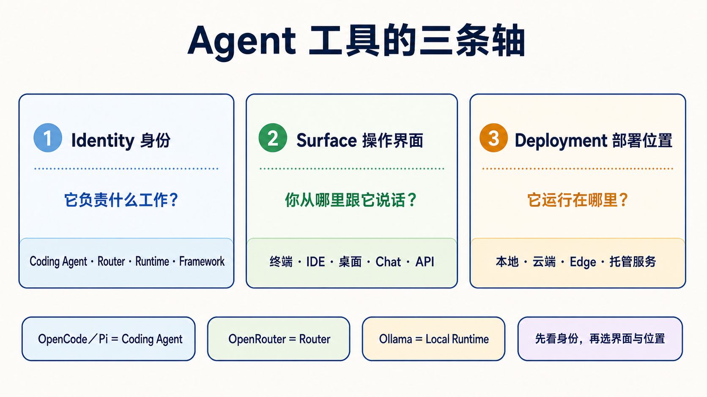

原课程本地核对资料，保留原内容与顺序。外链已改为本地阅读入口。命令中的原仓库路径请按本课运行指南换成实际位置；版本差异见本课说明。MIT © 2026 Wenyu Chiou。
Agent 工具怎么分：身份、操作界面、部署位置
同一个工具可以出现在终端、IDE 和桌面应用中，也可以连接本地或云端模型。所以不要硬把工具塞进五个互斥“类型”。先问三个问题，会比较不容易混乱。

📌 先分清三条轴
| 轴 | 五岁也能懂的说法 | 正确问题 |
|---|---|---|
| Identity（身份） | 这个东西的工作是什么？ | 它是 Coding Agent、Router、Local Runtime、Framework，还是 Chat Gateway？ |
| Surface（操作界面） | 你从哪扇门跟它说话？ | 终端、IDE、桌面、Web、Chat app 还是 API？ |
| Deployment（部署位置） | 它的身体放在哪里？ | 你的电脑、云端主机、边缘设备，还是托管服务？ |
一个产品可以同时有很多 Surface，也可以更换 Deployment。这不会改变它的主要 Identity。
🎯 你会学会什么
- 分清 OpenCode、Pi、OpenRouter 和 Ollama，不再把它们当作同一类。
- 先选择工作身份，再选择界面和部署位置。
- 知道“本地”“开源”“有 permission prompt”都不等于安全保证。
- 把 Subagent 当作执行方式，不当作第六种产品。
🧩 身份：它到底负责什么
| 核心词 | 白话定义 | 例子 | 它不自动负责什么 |
|---|---|---|---|
| Coding Agent／Harness（程序代理／工作台） | 能在允许范围内读文件、改文件、跑命令，再回来报告 | Claude Code、Codex、OpenCode、Pi、Aider、goose | 不一定包含模型、Router 或 Sandbox |
| Router（路由器） | 把模型请求转发给不同 Provider | OpenRouter | 不会自己修改 repo，也不管理文件权限 |
| Local Runtime（本地模型引擎） | 在自己的电脑加载并运行模型 | Ollama、vLLM | 不会自己理解任务或操作工作目录 |
| Agent Framework（代理框架） | 给开发者编写状态、步骤、Handoff 和 Workflow 的工具箱 | LangGraph、CrewAI、Microsoft Agent Framework | 不是安装后就能替你完成工作的成品 Agent |
| Chat Gateway（聊天入口） | 把 Agent 连接到 Telegram、Slack 等消息入口 | Hermes Agent 的 gateway／messaging 模式 | 不代表底层模型、权限和部署已经安全 |
最短识别法：谁运行模型？谁转发请求？谁能碰文件？谁安排多个步骤？你从哪里说话？
🧭 常见工具放在哪里
| 工具 | 主要 Identity | 常见 Surface | 可用 Deployment | 初学者最容易搞错的地方 |
|---|---|---|---|---|
| OpenCode | Coding Agent／Harness | 终端、桌面、IDE | OpenCode 程序在本地运行 | 连接云端 Provider 只会发出模型请求，不会把 OpenCode 程序搬到云端；仍要选择模型和 permission |
| Pi | Coding Agent／Harness | 终端、SDK、RPC | 本地 | 这里的 Pi 不是 Raspberry Pi；它没有内置 Sandbox |
| OpenRouter | Router | API | 托管云端服务 | 它不会自己读文件或执行命令 |
| Ollama | Local Runtime | CLI、API | 本地或自己的服务器 | 它不是 Coding Agent；要由 Client／Agent 调用 |
| Aider | Coding Agent／pair programmer | 终端 | 本地 | 先看清 Git auto-commit／--no-verify 行为 |
| goose | Coding／general Agent | CLI、桌面、API | 本地 | Extension 权限要单独审查 |
| Hermes Agent | Agent runtime＋Chat Gateway | CLI、消息平台 | 本地或自己的主机 | Chat 入口不等于 24/7、安全或零维护 |
| OpenClaw | 可自建的 Agent／assistant 平台 | Web、Chat、CLI，取决于部署 | 本地、云端或 edge | 在 edge 运行不代表没有网络、工具或数据外泄风险 |
📚 必读阅读
- CLI Agents 指南：比较登录、Provider、Sandbox、项目规则和权限。
- Stage 4：Workflow Graph 与 Agent 框架：学习 Framework 和 Workflow Graph。
- Stage 5：Claude Code 生态：学习 Skills、MCP、Hooks 和 Subagents。
- Stage 7：Agent Production Engineering：学习 Harness、Loop、Graph、跨系统 Eval 和上线边界。
🪜 三步选择法
- 先选 Identity：要修改 repo 就选 Coding Agent；只想转接模型就选 Router；要在本地运行模型就选 Local Runtime；要自己编写 Workflow 才选 Framework。
- 再选 Surface：眼睛一直看程序就偏 IDE；需要命令、Git 和长任务就偏终端；需要手机消息入口才考虑 Chat Gateway。
- 最后选 Deployment：先从可恢复的 demo repo 和最小权限开始，再决定本地、云端或 edge。部署位置不会自动消除风险。
展开四个生活场景和安全边界
编写一个小功能
选择一个 Coding Agent／Harness，在 demo branch 中要求它先说明计划、再修改一个文件、运行测试并显示 diff。模型可以来自 Provider API，也可以由 Ollama 在本地运行。
用一个 API key 尝试不同 Provider
Coding Agent 仍负责文件和命令；OpenRouter 只负责转发模型请求。两者的账单、数据政策和权限要分开看。
手机接收例行整理
Hermes Agent 这类工具可以连接 Messaging Gateway。你仍要处理主机更新、密钥、允许的工具、失败重试和消息平台权限。
在 edge 设备处理敏感数据
本地模型可以减少把 Prompt 发送给外部 Provider 的需要，但 Agent 如果能联网、调用工具或读取其他文件夹，仍可能把数据带出去。要使用防火墙、容器／VM、最小权限、假数据测试和人工审核。
Subagent — “在 agent runtime 里再 spawn agent”
Subagent（子代理） 是主 Agent 把一小块任务交给另一个隔离工作者。它回答的是“工作怎么分”，不是“产品运行在哪里”。
| 路径 | 谁负责建立子代理 | 适合什么 |
|---|---|---|
| Framework-based | 你的 Python／TypeScript orchestration 程序 | 要自己控制状态、Provider、Handoff 和 Workflow |
| Coding-Agent native | Claude Code、Codex 等 Agent runtime | 在同一个 repo 中拆分研究、实现或审查任务 |
不论哪条路径，都要给子代理明确范围、输出格式、预算、停止条件和验证方式。主代理仍要读取结果；“使用了多个 Agent”不是正确性的证明。
继续阅读 Stage 5 的 Subagents 和可直接复制的 Subagent Cookbook。
🎯 精选 Projects 与学习资源
星星是本学习地图的阅读优先级，不是 GitHub stars，也不是工具总排名。
| 分类 | Project／资源 | 用它学什么 | 限制 | 评分 |
|---|---|---|---|---|
| Coding Agent／Harness | opencode | Provider 切换、rules、Skills 和 permission | 模型和 Sandbox 仍要另外选择 | ⭐⭐⭐⭐⭐ |
| pi | 小核心、extensions、SDK 和 RPC | 没有内置 Sandbox | ⭐⭐⭐⭐ | |
| aider | Git diff、commit 和 undo 工作流 | 先确认 auto-commit 和 hook 设置 | ⭐⭐⭐⭐⭐ | |
| goose | CLI、桌面、Provider 和 extensions | 先开放最小 extension 权限 | ⭐⭐⭐⭐ | |
| continue | IDE／CLI Surface 和 Agent mode | 不同 Surface 的权限要分开看 | ⭐⭐⭐⭐ | |
| Router／Runtime | OpenRouter 官方文档 | Router、Provider routing 和 usage | 不是 Coding Agent | ⭐⭐⭐⭐ |
| ollama | 本地模型下载和兼容 API | 不是 Coding Agent | ⭐⭐⭐⭐⭐ | |
| Messaging／自建 | hermes-agent | Agent runtime、Messaging Gateway 和调度 | 自建仍要维护并收窄工具权限 | ⭐⭐⭐⭐ |
| openclaw | 本地／edge／自建 assistant 的部署取舍 | 本地不等于零数据风险 | ⭐⭐⭐ | |
| Framework／Workflow | langgraph | 状态、节点、边、Checkpoint 和 Human-in-the-loop | 需要自己编写和测试 Workflow | ⭐⭐⭐⭐⭐ |
| crewAI | 角色、Task 和 Crew orchestration | 角色描述不能替代验证 | ⭐⭐⭐⭐ | |
| agent-framework | Microsoft 当前 Agent／Workflow 开发路径 | 旧 AutoGen／Swarm 教材只作历史背景 | ⭐⭐⭐⭐ |
✅ 完成检查
- [ ] 我能用一句话说明 Coding Agent、Router、Local Runtime 和 Framework 的差别。
- [ ] 我不会把 OpenRouter 当成 Agent，也不会把 Ollama 当成修改文件的工具。
- [ ] 我知道 OpenCode／Pi 的 Provider、模型、Surface 和 Sandbox 要分开确认。
- [ ] 我选择工具时先看 Identity，再看 Surface 和 Deployment。
- [ ] 我知道本地、edge、开源和 permission prompt 都不是安全保证。
工具身份、官方入口、项目状态和许可证核查：2026-08-30 UTC。